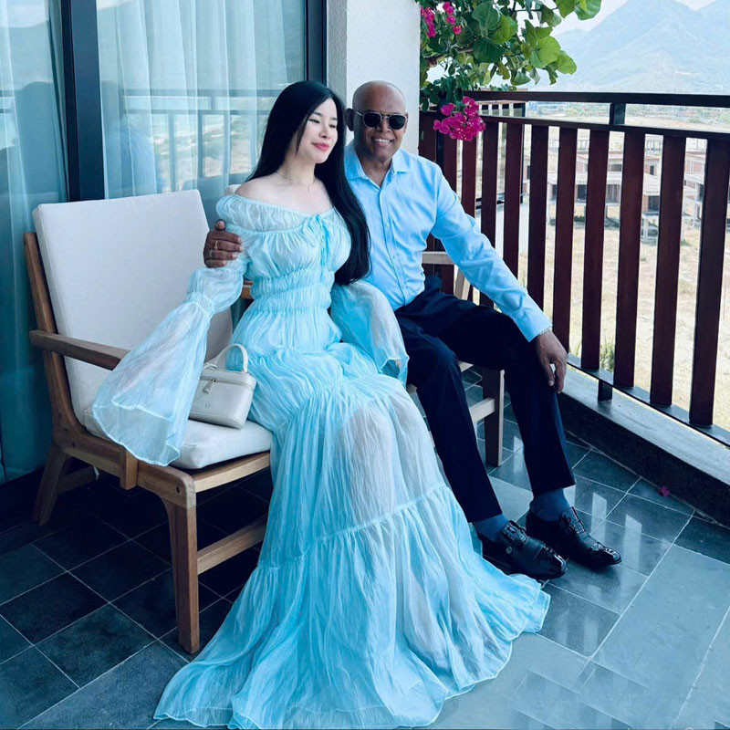

Trang chủ/ Công nghệ/ Thiết bị - Phần cứng
Lần đầu gặp Chị Thùy Trang (SN 1984, phường Tây Nha Trang, Khánh Hòa) và anh Upendra Nath (SN 1963, quốc tịch Úc, làm trong lĩnh vực công nghệ thông tin) đều từng trải qua hôn nhân đổ vỡ, con cái đã ở độ tuổi trưởng thành. Chuyện quá khứ không khiến họ chùn bước trong hành trình kiếm tìm hạnh phúc, nhờ đó mới có cơ hội vun đắp cuộc hôn nhân hạnh phúc như hiện tại. Cặp đôi quen biết nhau vào tháng 12/2025 thông qua ứng dụng hẹn hò. Anh Upendra cho hay, anh tìm hiểu về Việt Nam từ khi còn đi học nhưng mãi đến khi trở thành chuyên gia IT, anh mới có cơ hội đặt chân đến Việt Nam, khám phá nhiều địa điểm thú vị nơi đây. Sau thời gian dài sống độc thân vì hôn nhân đổ vỡ, anh mong muốn tìm kiếm một người bạn đời xinh đẹp và giàu tình cảm đến từ dải đất hình chữ S – nơi anh có nhiều thiện cảm. Và ngay lần đầu nhìn thấy hình ảnh chị Trang trên ứng dụng, anh đã cảm nhận được điều đặc biệt đang tới. Anh chủ động nhắn tin làm quen và từ sau đó dành toàn bộ thời gian rảnh của mình cho người phụ nữ này. Về phía mình, chị Trang ấn tượng với nụ cười tươi và sự quan tâm tỉ mỉ của anh. Anh Upendra dành cho chị nhiều thời gian, tìm hiểu mọi thứ về chị một cách sâu sắc. Dù công việc bận rộn, anh vẫn ưu tiên nhắn tin, gọi điện cho chị mỗi ngày. Chị ấn tượng với câu nói của anh khi họ quen nhau chưa lâu: “Em hãy gọi hoặc nhắn tin cho anh bất cứ khi nào em muốn, kể cả khi anh đang ngủ”. Khi mới chỉ tìm hiểu nhau qua mạng, anh Upendra đã vạch ra kế hoạch cụ thể trong tương lai. Điều đó khiến chị sẵn sàng bỏ qua khoảng cách tuổi tác, có thêm niềm tin vào mối quan hệ này. Đầu năm 2026, sau 2 tháng hẹn hò trực tuyến, anh Upendra đến Việt Nam gặp chị Trang như đã hẹn. Chị từ Khánh Hòa vào TPHCM đón anh nhưng vì chuyến bay bị trễ 6 tiếng đồng hồ nên đổi lại, anh Upendra là người đón chị ở sân bay Tân Sơn Nhất. Khoảnh khắc đầu tiên thấy nhau ngoài đời, họ đều có cảm giác thân thuộc. Anh Upendra xúc động ôm lấy bạn gái và nói lời yêu thương. “Trang ăn mặc chỉn chu, cư xử lịch thiệp và thực sự rất xinh đẹp. Từ cái bắt tay và cái ôm đầu tiên tôi đã nghĩ rằng, cô ấy là người duy nhất tôi muốn dành trọn cuộc đời để ở bên. Quá khứ không quá quan trọng với tôi, miễn sao cả hai có sự đồng điệu trong mục tiêu và định hướng tương lai”, anh Upendra bày tỏ. Cầu hôn sau 1 ngày gặp gỡ Dịp đó, anh Upendra đến Việt Nam với một danh sách những điều muốn làm cùng bạn gái. Một trong số đó là cầu hôn chị. Ngay sau ngày hội ngộ ở sân bay, anh mời chị đến một khu nghỉ dưỡng, chuẩn bị hoa, nhẫn và cầu hôn chị trong khung cảnh lãng mạn.

Chị Trang được cầu hôn chỉ sau 1 ngày gặp
“Anh ấy quỳ xuống và nói: ‘Em yêu dấu! Anh yêu em rất nhiều, em có đồng ý kết hôn với anh không’. Màn cầu hôn không có người chứng kiến, chỉ có chúng tôi với nhau nhưng tôi vẫn thấy rất trọn vẹn”, chị Trang kể.
Anh Upendra ở Việt Nam 2 tuần rồi trở lại Úc vì công việc. Anh hứa hẹn, 2 tháng sau sẽ quay lại đây để ra mắt gia đình và tổ chức đám cưới với chị Trang.
Qua cuộc gọi video, anh Upendra nhiều lần trò chuyện với gia đình bạn gái. Sự ủng hộ của mọi người, đặc biệt là con riêng của chị Trang giúp anh có thêm động lực vun đắp mối quan hệ này.
Phía gia đình anh Upendra đơn giản hơn, bố mẹ anh đã mất, anh chị em ruột đều đã có cuộc sống ổn định ở các quốc gia khác. Hạnh phúc của riêng anh, do anh tự quyết định.
Tháng 4/2026, anh giữ đúng lời hứa, quay lại Việt Nam. Lần ghé thăm này đặc biệt hơn cả bởi anh một mình vượt hơn 6.000 đến Khánh Hòa làm chú rể, đón người mình thương về làm vợ.
Vốn yêu thích văn hóa Việt, anh Upendra chủ động chọn mặc áo dài truyền thống trong ngày trọng đại của mình. Anh khá bất ngờ trước các nghi thức trang trọng và không khí ấm cúng trong đám cưới ở quê vợ.
“Gia đình tôi chỉ mở bữa tiệc nhỏ, mời 40 người đến chung vui. Dẫu vậy, tình cảm của gia đình và sự chu đáo của bạn đời vẫn cho tôi cảm giác đầy đủ, ấm áp”, chị Trang nói.
Sau lễ cưới, anh Upendra trở lại Úc làm việc còn chị Trang vẫn sống ở Việt Nam. Để duy trì tình cảm, anh thu xếp về thăm vợ 3 tháng một lần.
Hàng ngày, họ thường xuyên gọi video cho nhau, đôi khi không phải để trò chuyện mà chỉ để cảm nhận được người ấy đang hiện diện trong cuộc đời mình.
Theo kế hoạch, vào năm 2027, sau khi chính thức nghỉ hưu, anh Upendra sẽ chuyển hẳn về Việt Nam sinh sống cùng vợ, khép lại quãng thời gian xa cách. Ở Việt Nam, chị đang cố gắng sắp xếp tổ ấm riêng chu toàn để đón chồng về đoàn tụ.